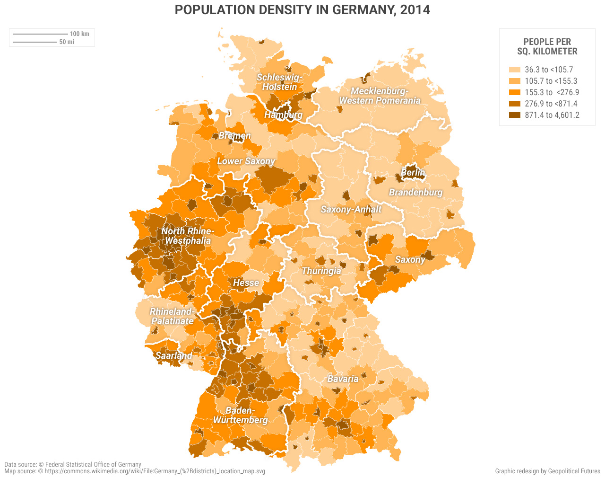

Германия имеет один из самых низких уровней рождаемости в Европе. Для компенсации демографического спада страна активно привлекает иммигрантов. Благодаря этому в последние годы удается поддерживать стабильную численность населения.